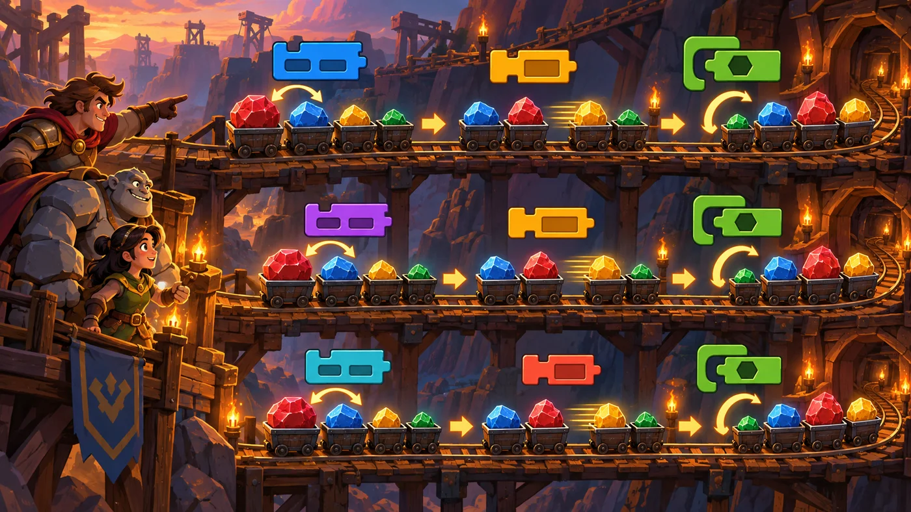
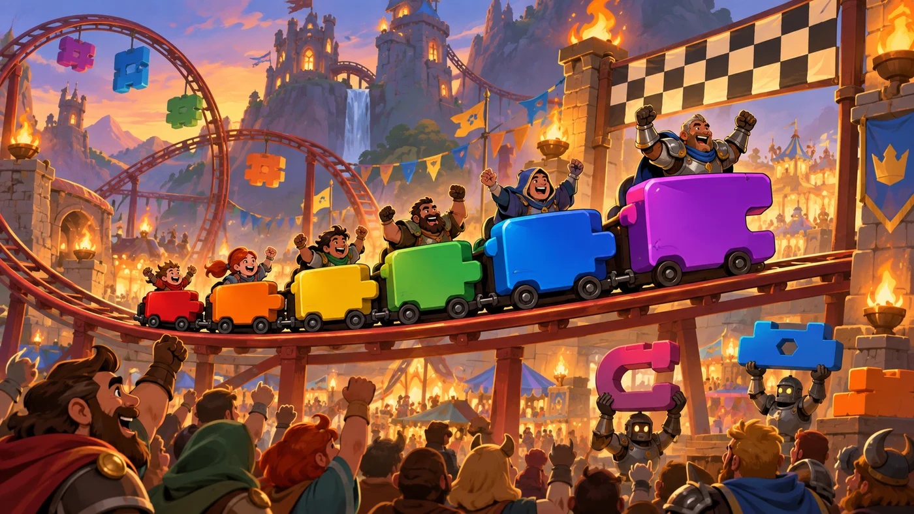

扣哒考级 · GESP 图形化 四级 · 第 5 单元 | 机械乐园 COGWHEEL PARK
排队过山车 经典排序：冒泡 / 插入 / 选择
Classic Sorting Algorithms

戈登
机械师 · 你的向导
过山车站前排着三列车厢，编号是 5、3、8、1——乱得不成样子。
戈登拉下第一根拉杆："这列车用冒泡。"
只听"咔嗒、咔嗒"一串轻响，最大的 8 一路挤到了最后。
"再看那列，"他指着另一条轨道，"那列用选择——它每趟只换一次。"
戈登拉下第一根拉杆："这列车用冒泡。"
只听"咔嗒、咔嗒"一串轻响，最大的 8 一路挤到了最后。
"再看那列，"他指着另一条轨道，"那列用选择——它每趟只换一次。"
戈登 · 机械师
四级卷子上，排序题几乎每次都考"第一趟之后是什么样"。做题方法只有一个：拿张纸，一步一步把这一趟比出来，别凭印象。
三种排序的"一趟"各是什么，先在心里默念一遍再动笔。
0 单元导语与目标
Before We Start
0.1 学习目标
- 认识三种经典排序：冒泡、插入、选择；
- 会说清每种排序"每一趟在干什么"；
- 会手算一趟之后的结果（这是四级最爱考的一类题）；
- 会用两层循环实现冒泡排序；
- 知道三种排序各自的稳定性。
0.2 考纲对照
| 考纲知识块 | 考纲要求 | 本单元小节 |
|---|---|---|
| 5 经典排序 | 冒泡排序、插入排序、选择排序等 | 1.1～1.3、2.1～2.3、3.1～3.3、4.1～4.3 |
| （知识点详述第 4 条） | 掌握基础经典排序算法，包括：冒泡排序、插入排序、选择排序等 | — |
这一单元是本册的"重头戏"。' '考试最爱给一串数，问你"第一趟之后是什么样"——' '把三种排序的"一趟"分清楚，这类题就全对了。
1 三种经典排序
Three Classic Sorts
1.1 冒泡：相邻两两换
过山车排成了三列车厢，左右两列都在做同一件事：把车厢按编号从小到大排好。

assets/illustrations/scratch-L4-05-01_coaster_three_lanes.webp
【配图位】三条并排的过山车轨道，车厢都是同一批、初始顺序相同，分别演示两两交换、插入就位、挑最小移到最前。（提示词见《GESP配图清单与AI绘图提示词》第四节 4-5）
图 2（SVG）：三种排序

assets/illustrations/scratch-L4-05-02_coaster_sorted.webp
【配图位】过山车驶过终点时车厢已按编号从小到大整整齐齐，游客欢呼。（提示词见《GESP配图清单与AI绘图提示词》第四节 4-5）
1.2 插入：往排好的里插
打个比方：冒泡像水里的气泡——大的那个会一路往后"冒"到底；
插入像理牌——左手拿着排好的牌，右手来一张就往合适的位置插一张；
选择像挑队员——每次都从剩下的人里挑最矮的站到队首。
插入像理牌——左手拿着排好的牌，右手来一张就往合适的位置插一张；
选择像挑队员——每次都从剩下的人里挑最矮的站到队首。
1.3 选择：每趟挑最小
图 3（SVG）：三种排序的第一趟
2 冒泡排序
Bubble Sort
2.1 一趟怎么比
重点示例：一趟从头比到尾
图形化积木
读法 i 从 1 走到 n − 1，每次把第 i 项和它后面那项比一比：前面的大就交换
2.2 一趟能定下一个
图 4（SVG）：冒泡的一趟
看一个具体例子：序列 5、3、8、1
第 1 次比（5 与 3）：5 > 3，交换 → 3、5、8、1
第 2 次比（5 与 8）：不换 → 3、5、8、1
第 3 次比（8 与 1）：8 > 1，交换 → 3、5、1、8
一趟之后：3、5、1、8——最大的 8 已经"冒"到了最后。
第 1 次比（5 与 3）：5 > 3，交换 → 3、5、8、1
第 2 次比（5 与 8）：不换 → 3、5、8、1
第 3 次比（8 与 1）：8 > 1，交换 → 3、5、1、8
一趟之后：3、5、1、8——最大的 8 已经"冒"到了最后。
2.3 用两层循环实现
重点示例：外层管趟数，内层管一趟
图形化积木
要点 外层循环 = 趟数，内层循环 = 一趟里的逐个比较。冒泡排序就是"两层循环 + 一个交换判断"
一个容易忽略的点：比较用的是"大于"（>），不是"大于等于"。
正因为相等的两个不会被交换，冒泡排序才是稳定的。
正因为相等的两个不会被交换，冒泡排序才是稳定的。
3 插入排序
Insertion Sort
3.1 像整理手里的扑克牌
图 5（SVG）：插入排序
3.2 从后往前找位置
看一个具体例子：序列 5、3、8、1
· "新牌"3：和 5 比，5 更大 → 5 右挪，3 插到最前 → 3、5、8、1
· "新牌"8：和 5 比，5 小 → 直接停在原地 → 3、5、8、1
· "新牌"1：比 8、5、3 都小 → 一路右挪，1 插到最前 → 1、3、5、8
排完了。注意：每一张"新牌"只和左边比，不用管右边。
· "新牌"3：和 5 比，5 更大 → 5 右挪，3 插到最前 → 3、5、8、1
· "新牌"8：和 5 比，5 小 → 直接停在原地 → 3、5、8、1
· "新牌"1：比 8、5、3 都小 → 一路右挪，1 插到最前 → 1、3、5、8
排完了。注意：每一张"新牌"只和左边比，不用管右边。
3.3 为什么它是稳定的
关键在这一句："比它大的都往右挪"——遇到相等的就停下，新牌会插在相等元素的后面。
所以两个相等的元素，原来在前面的排完还在前面——插入排序是稳定的。
所以两个相等的元素，原来在前面的排完还在前面——插入排序是稳定的。
4 选择排序
Selection Sort
4.1 每趟挑出最小的
图 6（SVG）：选择排序
4.2 换到最前面
看一个具体例子：序列 5、3、8、1
· 第 1 趟：未排好部分是"5、3、8、1"，最小 1 在第 4 位 → 和 5 交换 → 1、3、8、5
· 第 2 趟：未排好部分是"3、8、5"，最小 3 已在第 2 位 → 不动 → 1、3、8、5
· 第 3 趟：未排好部分是"8、5"，最小 5 → 和 8 交换 → 1、3、5、8
注意：每趟只交换一次，交换次数比冒泡少——这是它的优点。
· 第 1 趟：未排好部分是"5、3、8、1"，最小 1 在第 4 位 → 和 5 交换 → 1、3、8、5
· 第 2 趟：未排好部分是"3、8、5"，最小 3 已在第 2 位 → 不动 → 1、3、8、5
· 第 3 趟：未排好部分是"8、5"，最小 5 → 和 8 交换 → 1、3、5、8
注意：每趟只交换一次，交换次数比冒泡少——这是它的优点。
4.3 为什么它不稳定
看这个反例：序列 5a、5b、1（两个 5 大小相同，a 在前、b 在后）
第 1 趟：最小的是 1（第 3 位）→ 和第一位交换 → 1、5b、5a
5a 和 5b 的前后顺序被颠倒了！
原因就在于"跨过去交换"这个动作——它把最前面的元素一路甩到了后面，中间那些相等元素自然就被打乱了。
第 1 趟：最小的是 1（第 3 位）→ 和第一位交换 → 1、5b、5a
5a 和 5b 的前后顺序被颠倒了！
原因就在于"跨过去交换"这个动作——它把最前面的元素一路甩到了后面，中间那些相等元素自然就被打乱了。
一句话对比：冒泡和插入是"相邻或就近调整"，所以稳定；选择是"跨越式交换"，所以不稳定。
5 代码实战
Level Practice
这一关要把多种"规则"配合起来用：一边按规则排序，一边按排序结果行动。
关卡
联合作战
进入关卡 →
故事：
乐园的一队机械战士要按编号从小到大依次出发。它们一开始站得乱七八糟，
你得先排队、再出动——排错了，出动的顺序就全乱了。

assets/stages/py-L4-05-stage1_joint_forces.webp
【关卡截图位】请把《联合作战》的游戏画面截图放到此处（放入 assets/stages/ 目录，文件名为 py-L4-05-stage1_joint_forces.webp）。
思路：先做一遍冒泡的"一趟"把最小的换到前面，再按顺序调用"出动"这个函数。 排序负责理清顺序，函数负责执行动作——两者配合就是完整的程序。
重点示例：先排好，再依次出动
图形化积木
读法 上半段是冒泡的两层循环（负责排序），下半段是一个"依次出动"的函数（负责按顺序执行）
自己试一试：把比较条件里的"大于"改成"大于等于"，再跑一次——想想看：改成"大于等于"之后，冒泡还是稳定的吗？
这一关把排序和函数合在了一起：' '排序理清顺序，函数负责动作。这就是四级综合题最常见的组合。
留意"趟数"和"比较次数"：外层趟数是"项目数 − 1"，内层每趟比较也是"项目数 − 1"次（写得更精细时会逐趟减少 1）。手算题最爱在这里设问。
去扣哒世界闯这一关 →
6 常见陷阱
Common Traps
陷阱 1：把三种排序的"一趟"搞混。冒泡的一趟是"相邻两两比到底"，选择的一趟是"挑最小换到前面"，插入的一趟是"给一张新牌找位置"。
正确做法：手算时先默念一句"这一趟在干什么"。
正确做法：手算时先默念一句"这一趟在干什么"。
陷阱 2：比较条件写成"大于等于"。那样相等的元素也会被交换，冒泡就不再稳定了。
正确做法：只有"前面的大于后面的"才换。
正确做法：只有"前面的大于后面的"才换。
陷阱 3：以为选择排序和冒泡一样稳定。选择排序每趟"跨过去交换"，很容易打乱相等元素的先后。
正确做法：记牢"冒泡稳定、插入稳定、选择不稳定"。
正确做法：记牢"冒泡稳定、插入稳定、选择不稳定"。
陷阱 4：手算一趟时把"已排好的部分"也重新比一遍。冒泡每趟末尾都会多定下一个；插入左边始终不动。
正确做法：看清这一趟的范围是"全部"还是"未排好的部分"。
正确做法：看清这一趟的范围是"全部"还是"未排好的部分"。
7 题目练习
Practice
第 1 题改编自 2026 年 6 月 · 图形化编程 四级 第 13 题，其余为原创练习题。
改编自 2026 年 6 月 · 图形化编程 四 级 · 第 13 题单选题
已知列表
在第 1 趟排序（从头到尾的完整遍历）过程中，相邻元素之间总共发生了多少次交换（ ）。
data = [6, 8, 3, 7, 5] 中存放了 5 个互不相同的整数。现采用冒泡排序，按从大到小的顺序重新排列。在第 1 趟排序（从头到尾的完整遍历）过程中，相邻元素之间总共发生了多少次交换（ ）。
A.2
B.3
C.4
D.5
B.3
C.4
D.5
查看答案与详解
答案：B。一步一步比（从大到小：前一个小就交换）：
· 6 与 8：6 < 8 → 交换 →
· 6 与 3：6 > 3 → 不换
· 3 与 7：3 < 7 → 交换 →
· 3 与 5：3 < 5 → 交换 →
一共 3 次交换，最小的 3 已经被送到了最后。
最容易错的地方：题目问的是"交换了几次"，不是"比较了几次"——一趟 5 个元素要比较 4 次，但交换只有 3 次。
从大到小还是从小到大？看清题目要求再动笔，两个方向的交换次数往往不一样。
对应小节2.1、2.2 冒泡的一趟。
· 6 与 8：6 < 8 → 交换 →
8 6 3 7 5（第 1 次）· 6 与 3：6 > 3 → 不换
· 3 与 7：3 < 7 → 交换 →
8 6 7 3 5（第 2 次）· 3 与 5：3 < 5 → 交换 →
8 6 7 5 3（第 3 次）一共 3 次交换，最小的 3 已经被送到了最后。
最容易错的地方：题目问的是"交换了几次"，不是"比较了几次"——一趟 5 个元素要比较 4 次，但交换只有 3 次。
从大到小还是从小到大？看清题目要求再动笔，两个方向的交换次数往往不一样。
对应小节2.1、2.2 冒泡的一趟。
原创练习题单选题
对序列 5、3、8、1 使用冒泡排序（每趟从左到右相邻比较、前大后小就交换），第 1 趟结束后序列是（ ）。
A.3、5、1、8
B.1、3、5、8
C.3、5、8、1
D.1、5、3、8
B.1、3、5、8
C.3、5、8、1
D.1、5、3、8
查看答案与详解
答案：A。一步一步比：
· 比 5 和 3：5 > 3 → 交换 → 3、5、8、1
· 比 5 和 8：不大于 → 不动 → 3、5、8、1
· 比 8 和 1：8 > 1 → 交换 → 3、5、1、8
一趟结束，最大的 8 已经"冒"到了最后一位。
B 错：那是全部排完的结果；
C 错：一次都没交换，说明没有认真比；
D 错：把最小的 1 换到了最前面——那是选择排序一趟的结果。
对应小节2.1、2.2 冒泡的一趟。
· 比 5 和 3：5 > 3 → 交换 → 3、5、8、1
· 比 5 和 8：不大于 → 不动 → 3、5、8、1
· 比 8 和 1：8 > 1 → 交换 → 3、5、1、8
一趟结束，最大的 8 已经"冒"到了最后一位。
B 错：那是全部排完的结果；
C 错：一次都没交换，说明没有认真比；
D 错：把最小的 1 换到了最前面——那是选择排序一趟的结果。
对应小节2.1、2.2 冒泡的一趟。
原创练习题单选题
对序列 5、3、8、1 使用选择排序，第 1 趟结束后序列是（ ）。
A.3、5、1、8
B.1、3、8、5
C.1、3、5、8
D.5、3、1、8
B.1、3、8、5
C.1、3、5、8
D.5、3、1、8
查看答案与详解
答案：B。选择排序的第 1 趟是"在全部元素里找最小的，换到第 1 位"：最小的是 1（在第 4 位），和第一位的 5 交换 → 1、3、8、5。
A 错：那是冒泡一趟的结果；
C 错：那是全部排完的结果；
D 错：只把 1 挪到了第 3 位，不符合"换到最前面"的规则。
对应小节4.1、4.2 选择排序的一趟。
A 错：那是冒泡一趟的结果；
C 错：那是全部排完的结果；
D 错：只把 1 挪到了第 3 位，不符合"换到最前面"的规则。
对应小节4.1、4.2 选择排序的一趟。
原创练习题单选题
插入排序在处理一个"新牌"时，如果它和已排好部分里的某个元素相等，应该怎么做（ ）。
A.插到那个相等元素的前面
B.插到那个相等元素的后面
C.跳过这张牌不处理
D.把那个相等元素删掉
B.插到那个相等元素的后面
C.跳过这张牌不处理
D.把那个相等元素删掉
查看答案与详解
答案：B。插入排序的做法是"比它大的都往右挪，遇到不大于的就停"——所以新牌会插在相等元素的后面。
正是这一点让插入排序保持稳定：原来在前面的元素，排完仍然在相等元素的前面。
A 错：插到前面就把先后调换了，那样就不稳定了；
C、D 错：都不是插入排序的做法。
对应小节3.1～3.3 插入排序。
正是这一点让插入排序保持稳定：原来在前面的元素，排完仍然在相等元素的前面。
A 错：插到前面就把先后调换了，那样就不稳定了；
C、D 错：都不是插入排序的做法。
对应小节3.1～3.3 插入排序。
原创练习题多选题
关于三种经典排序，下面说法哪些是正确的（ ）。
A.冒泡排序每趟会把当前未排好部分里最大的送到末尾
B.选择排序每趟只交换一次
C.插入排序的左边始终是一段"已经排好"的序列
D.三种排序都是稳定的
B.选择排序每趟只交换一次
C.插入排序的左边始终是一段"已经排好"的序列
D.三种排序都是稳定的
查看答案与详解
答案：A、B、C。这三条正是三种排序的核心特征。
D 错：选择排序是不稳定的——它每趟"跨过去交换"，容易把相等元素的前后顺序打乱。
对应小节1.1～1.3、2.2、3.1、4.1、4.3 三种排序。
D 错：选择排序是不稳定的——它每趟"跨过去交换"，容易把相等元素的前后顺序打乱。
对应小节1.1～1.3、2.2、3.1、4.1、4.3 三种排序。
原创练习题判断题
在图形化编程中，用冒泡排序给一个列表排序时，如果比较条件写的是"前面的大于后面的就交换"，那么两个相等的元素不会被交换。（ ）
查看答案与详解
答案：正确（√）。用"大于"而不是"大于等于"，意味着相等时不做任何动作——它们的前后位置被原样保留。
这正是一条重要的结论：冒泡排序是稳定的。
（如果把条件改成"大于等于"，相等元素就会被交换，稳定性也就没了。）
对应小节2.3、4.3 稳定性与比较条件。
这正是一条重要的结论：冒泡排序是稳定的。
（如果把条件改成"大于等于"，相等元素就会被交换，稳定性也就没了。）
对应小节2.3、4.3 稳定性与比较条件。
8 本单元小结
Unit Summary
戈登 · 机械师
三种排序，记三句话：冒泡——相邻两两比，大的往后冒，一趟定下最大的；
插入——左边是排好的，右边来一张就往里插；
选择——每趟挑最小的，换到前面来（每趟只换一次）。
稳定性：冒泡稳定、插入稳定、选择不稳定。
你在过山车旁学到了什么
- 冒泡排序：相邻两两比较，前大后小就交换；一趟把最大的送到末尾；
- 插入排序：左边是已排好的，新牌从右往左找位置，比它大的往右挪；
- 选择排序：每趟在未排好部分里找最小的，与第 1 位交换（每趟只换一次）；
- 实现：冒泡用两层循环——外层趟数、内层一趟里的逐个比较；
- 稳定性：冒泡稳定、插入稳定、选择不稳定（跨过去交换）。
下一站：乐园总调度
最后一站，把前面学的全用上：列表装数据、函数做模块、广播协调角色、排序理清顺序、模拟演一遍过程——像总调度台一样，把整座乐园串起来。